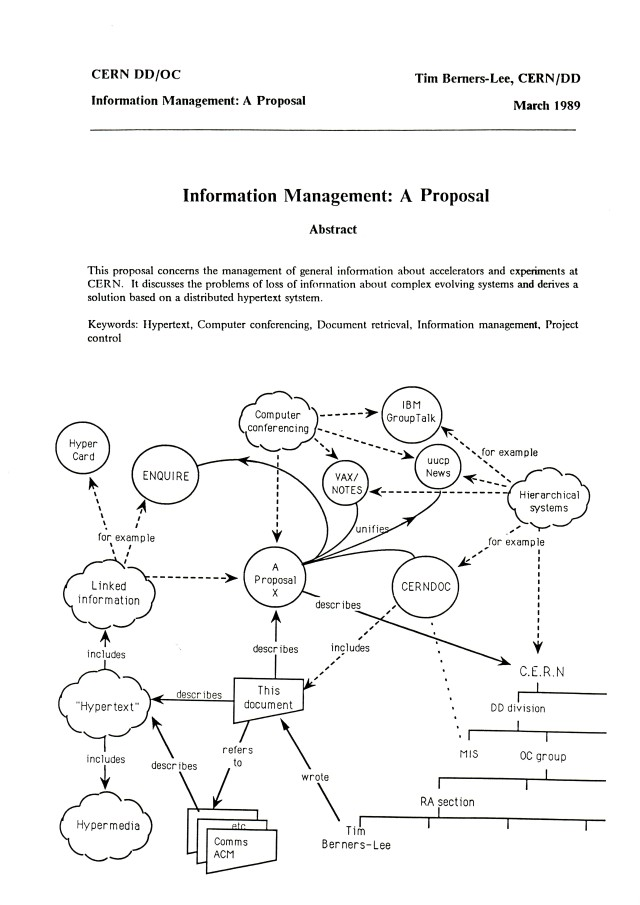

In 1989, a British scientist named Tim Berners-Lee invented the World Wide Web at CERN.
Its purpose was to distribute scientific research easily between universities and institutes.
His first proposal suggested a system called “Information Management: A Proposal”, but it lacked
detailed specifications, so he submitted a second proposal called “Hypertext and CERN”, outlining
the concepts of URLs, HTML, and a protocol for requesting and transferring documents. This laid
the foundation for the modern web.

The first page of Tim Berners-Lee's proposal for the World Wide Web, written in March 1989
[1]
Milestones
1990: The first browser and the World Wide Web created
1995: Internet Explorer released by Microsoft and integrated with Windows
1998: Google is founded
2002: Mozilla Firefox released
2008: Google releases Chrome
2010s: Rise of smartphones and mobile-first design
2015: Microsoft Edge replaces Internet Explorer
Web Evolution
After the World Wide Web, the Line-mode browser — the second browser ever — was created. It was text-based and
could run on various computers. Shortly after, Mosaic became the first graphical browser. It allowed users to view
images and navigate hyperlinks. Its success inspired Netscape Navigator and Internet Explorer, leading to the
browser wars. The competition accelerated innovation, leading to the creation of CSS, JavaScript, and more. HTML
progressed through versions 2.0, 3.2, 4.01, XHTML, and HTML5, allowing web pages to work consistently across
browsers.
The Latest in HTML Development
HTML5 is the fifth and current version of HTML. However, it is constantly maintained and improved by the WHATWG
and W3C. So while there is no official HTML6, HTML continues to evolve to meet the demands of modern web
development.
Intro of Arabic Letters and Symbols
In 2009, ICANN announced it would allow top-level domain names written in local languages and alphabets, not
just Latin. In 2013, the first Arabic borderless TLD شبكة (which means "web" in Arabic) was
launched.
Modern Browsers
Today, web browsers such as Chrome, Firefox, Edge, and Safari prioritize speed, security, and
user experience. The rise of mobile-first browsers has shifted design priorities toward responsive layouts,
ensuring websites function seamlessly across devices. According to StatCounter
[4]
, Chrome is the leading browser with 69.23% of users worldwide. Its closest
competitor, Safari, holds 14.98%, followed by Microsoft Edge at 5.03%.
The Future of the Web
Looking ahead, the web is evolving with cloud-based applications, AI integration, and voice browsing, which expand
how users interact with online content. The next major phase is Web 4.0, also called the Intelligent or Symbiotic
Web. It is based on machine learning, AI, and decentralized technology. Some key features include artificial
intelligence, the Internet of Things, decentralization, advanced interactivity, and user-centric design. It is
expected to impact industries such as healthcare, smart city management, agriculture, education, and
transportation. [5]